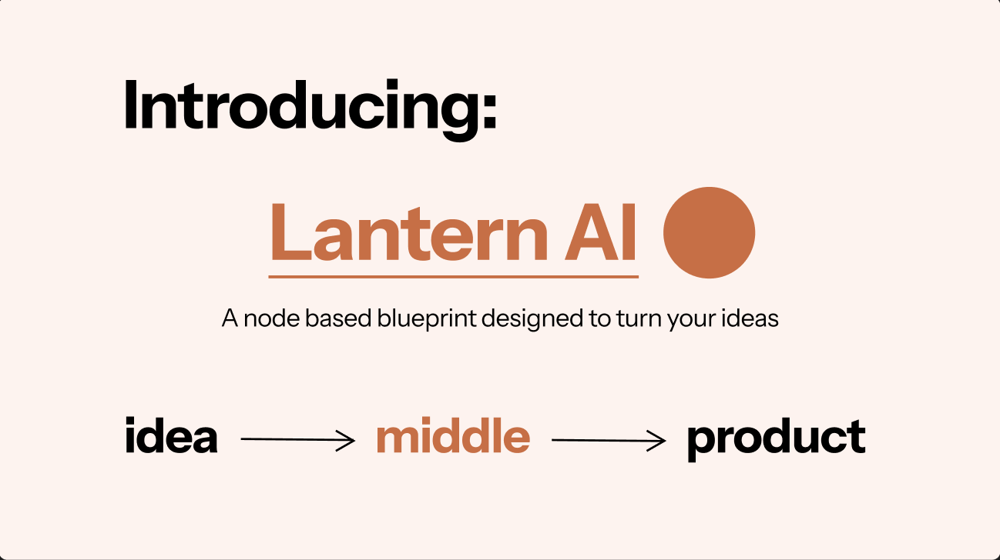

Lantern AI
A hackathon project for the colourstack prototype hackathon, University of Alberta, with the She Builds team 2026

- Role
- Editor and co-creator
- Type
- Hackathon Project
- Ideas behind it
- Student Coding paralysis
- Status
- Prototyped
- Tech Stack
- Figma
Overview
This project --
First workflo
How it came together
Describe how the design changed from the first template to now, and which parts you edited by hand. Add screenshots of early versions here.
What I learned
How JavaScript handles positioning and interactivity with math functions. I dug into how a single script can change the display fonts on screen, and how the HTML and JavaScript files work together. I also learned how to do AI-assisted coding while making my own edits, and how to host a site on GitHub Pages.